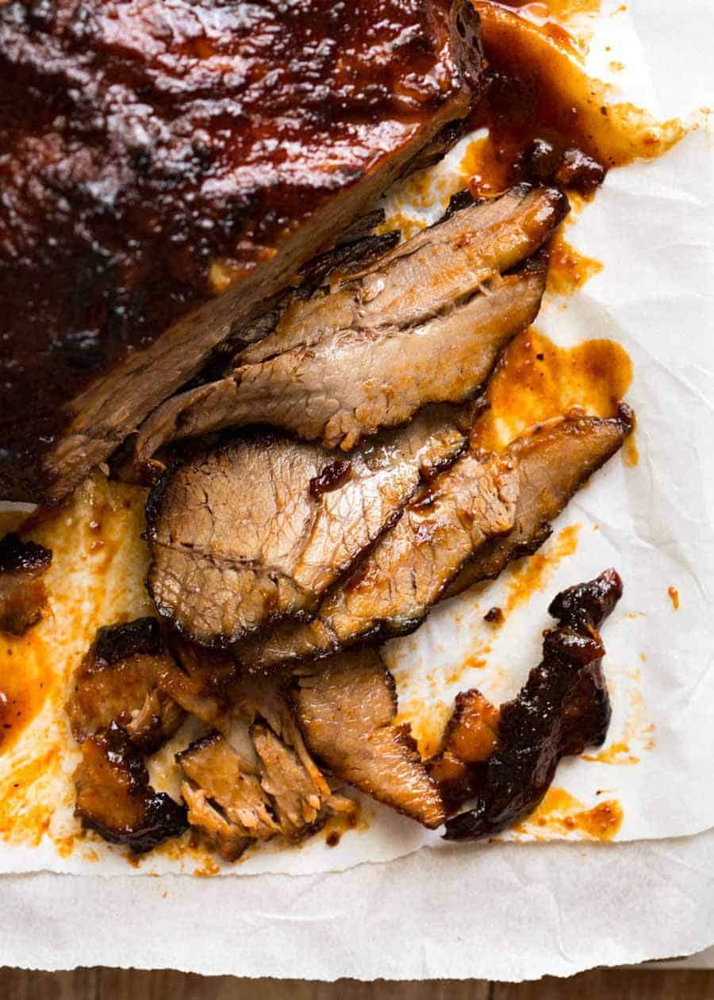

Brisket Recipe

Descripton
Who doesnt love brisket?
Ingredients
- Brisket
- 1 tbsp brown sugar
- 2 tsp paprika powder
- 1 tsp onion powder
- 1 tsp garlic powder
- 1/2 tsp cumin powder
- 3/4 tsp mustard powder
- 1 tsp salt
- 1/2 tsp black pepper
Steps
- Mix Rub ingredients. Rub all over brisket. If time permits, leave for 30 minutes – 24 hours in the fridge, but I rarely do this.
- Combine BBQ Sauce ingredients in a slow cooker. Mix then add the brisket – squish it in if needed, like I did (see video).
- Slow cook in slow cooker for 8 hours (1.5 kg / 3 lb) to 10 hours (2 kg / 4 lb). (Note 2 for pressure cooker and click here for oven)
- Remove brisket onto a tray.
- Pour liquid in slow cooker into a saucepan. Bring to simmer over medium high heat and reduce until it thickens to a syrup consistency (it thickens more as it cools).
- Meanwhile, drizzle brisket with oil then roast in a 200C/390F oven for 15 minutes until brown spots appear. Remove then baste generously with Sauce, then return to oven for 5 minutes. Remove and baste again, then return to oven for 5 – 10 minutes until it caramelises and looks like the photos. (See note for BBQ option)
- TO SERVE: Slice brisket thinly across the grain and serve with remaining BBQ Sauce. This is terrific served as a meal with sides or piled high onto rolls with Coleslaw as sliders. See Note 3 for more ideas.